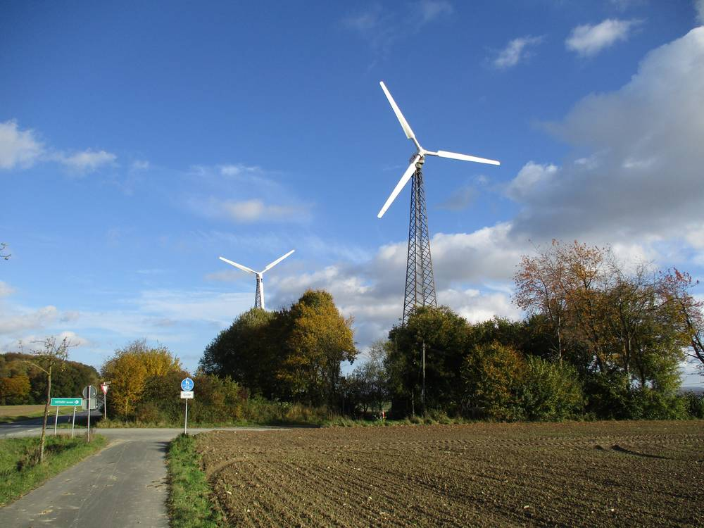

독일 묀제 풍력 사업자들, 수익 나눌 시민·에너지 재단 추진…의회는 운영위원회 동수 구성부터 정관에 담으라고 요구

노르트라인베스트팔렌주 법이 정한 주민 이익 참여 방식 놓고 1년 새 의회 결정 뒤집혀…재단안이 정말 주민을 참여시키는지 의문도
독일 노르트라인베스트팔렌주 묀제의 풍력발전 사업자 여러 곳이 발전 수익 일부를 지역에 나누기 위한 '묀제 시민·에너지 재단' 설립을 추진하자, 지역 의회가 재단 운영 방식을 정관으로 분명히 보장하라고 요구하고 나섰다. 사업자들은 풍력 수익을 재단에 넣어 마을의 자선·사회 사업에 쓰겠다는 구상인데, 주 법은 풍력 사업이 들어선 지자체와 주민의 재정적 참여를 정해 두고 있을 뿐 재단 방식을 꼭 요구하지는 않는다. 묀제 의회는 1년 전 재단 방식을 배제하기로 의결했다가 이후 이를 뒤집었고, 최근 회의에서는 근소한 다수가 운영위원회를 사업자 2명과 지역 정치인 2명으로 똑같이 꾸린다는 약속을 정관에 담는 것을 동의의 조건으로 걸었다. 사업자들은 서한으로 이런 구성을 약속했지만 정관 초안에는 시장이 당연직이고 위원은 5~13명이라는 내용만 있었고, 일부 의원들은 어느 기구가 지원 사업을 정하는지 불분명하고 위원들이 스스로 임기를 늘려 종신 위원이 될 수 있다고 비판했다. 사회민주당 쪽에서는 앞서 논의된 체육단체 등의 고정 참여가 빠졌다며 이 안이 정말 주민을 참여시키는지 물었고, 볼프 블레스켄 시장은 이번 의결이 정치권과 투자자 사이에 신뢰를 쌓는 조치라고 말했다.
시민에너지 관점
독일은 연방 재생에너지법으로 풍력 사업자가 1kWh당 최대 0.2센트를 지자체에 줄 수 있게 하는 등 이익 나눔의 틀을 이미 갖췄지만, 묀제 사례는 그 돈을 누가 어떻게 쓰느냐가 더 중요하다는 점을 보여 준다. 사업자와 몇몇 인사가 운영위원회를 쥐는 재단은 기부처럼 보여도 주민에게는 결정권이 없다. 주민이 지분을 갖는 시민풍력이나 협동조합이라면 수익 배분과 쓰임새를 총회에서 직접 정할 수 있다. 우리도 이익공유를 기금 나눠 주기에 머물게 하지 말고, 주민이 운영과 결정에 참여하는 지분 구조로 설계해야 한다.
출처: Soester Anzeiger 2026-11-10 Joel Hunold 원문 보기
ドイツ・メーネゼーの風力事業者、収益を分かち合う市民・エネルギー財団を計画…議会は運営委員会の同数構成をまず定款に明記するよう要求
ノルトライン＝ヴェストファーレン州法が定める住民の利益参加の方式をめぐり1年で議会の決定が覆る…財団案が本当に住民を参加させるのか疑問も
ドイツ・ノルトライン＝ヴェストファーレン州メーネゼーの複数の風力発電事業者が、発電収益の一部を地域に分かち合うための「メーネゼー市民・エネルギー財団」の設立を進めるなか、地元議会が財団の運営方法を定款ではっきり保証するよう求めた。事業者は風力収益を財団に入れて地域の慈善・社会事業に使う構想だが、州法は風力事業が立地する自治体と住民の財政的参加を定めているだけで、財団方式を必ずしも求めてはいない。メーネゼー議会は1年前に財団方式を排除する議決をしたが、その後これを覆し、最近の会議ではわずかな多数が、運営委員会を事業者2人と地元政治家2人の同数で構成するという約束を定款に盛り込むことを同意の条件とした。事業者は書簡でこうした構成を約束したものの、定款案には町長が当然委員で委員は5〜13人とあるだけで、一部の議員は、どの機関が助成事業を決めるのかが不明確で、委員が自ら任期を延ばして終身委員になり得ると批判した。社会民主党側からは、以前に議論されたスポーツ団体などの固定参加が抜けているとして、この案が本当に住民を参加させるのかとの問いが出て、ヴォルフ・ブレスケン町長は今回の議決が政界と投資家の間の信頼を築く措置だと述べた。
市民エネルギーの視点
ドイツは連邦再生可能エネルギー法で風力事業者が1kWhあたり最大0.2セントを自治体に支払えるようにするなど、利益分配の枠組みをすでに整えているが、メーネゼーの例はその資金を誰がどう使うかのほうが重要であることを示している。事業者と一部の人物が運営委員会を握る財団は、寄付のように見えても住民には決定権がない。住民が持ち分を持つ市民風力や協同組合なら、収益の分配と使い道を総会で直接決められる。韓国でも利益共有を基金のばらまきにとどめず、住民が運営と意思決定に参加する持ち分構造として設計すべきだ。
出典: Soester Anzeiger 2026-11-10 Joel Hunold 原文を読む
德国默讷湖镇风电运营商筹建分享收益的市民与能源基金会…议会要求先把管理委员会对等组成写入章程
围绕北莱茵－威斯特法伦州法律规定的居民收益参与方式，议会决定一年内反转…基金会方案能否真正让居民参与受到质疑
德国北莱茵－威斯特法伦州默讷湖镇的多家风电运营商正筹建"默讷湖市民与能源基金会"，把部分发电收益分给当地，镇议会则要求用章程明确保障基金会的运作方式。运营商的设想是把风电收益注入基金会，用于镇内的慈善和社会事业；但州法律只规定风电项目所在地方政府和居民应获得财务参与，并不一定要求采用基金会形式。默讷湖镇议会一年前曾决议排除基金会方式，后来又推翻了这一决定；在最近的会议上，微弱多数把"管理委员会由2名运营商代表和2名地方政界人士对等组成"写入章程作为同意的前提。运营商虽在信函中承诺了这种构成，但章程草案只写明镇长为当然成员、委员为5至13人；部分议员批评说，由哪个机构决定资助项目并不清楚，委员还可能自行延长任期成为终身委员。社民党方面指出，此前讨论过的体育团体等固定参与内容被删除，质疑该方案是否真正让居民参与；镇长沃尔夫·布莱斯肯则表示，此次决议是在政界与投资者之间建立信任的举措。
市民能源视角
德国已通过联邦可再生能源法建立了收益分享框架，例如允许风电运营商每千瓦时最多向地方政府支付0.2欧分；但默讷湖的案例说明，更重要的是这笔钱由谁、如何使用。由运营商和少数人士掌控管理委员会的基金会，看起来像捐赠，居民却没有决定权。如果是居民持股的市民风电或合作社，就能在成员大会上直接决定收益分配和用途。韩国也不应让收益共享停留在发放基金，而应设计成居民参与运营和决策的股权结构。
来源: Soester Anzeiger 2026-11-10 Joel Hunold 查看原文
Wind Operators in Germany's Möhnesee Plan a Citizens' and Energy Foundation to Share Revenue; Council Demands Equal Board Seats Be Written into the Statutes First
Council reversed itself within a year on how to deliver resident benefit-sharing under North Rhine-Westphalia law; members question whether the foundation really involves citizens
Several wind-turbine operators in Möhnesee, in Germany's North Rhine-Westphalia, are seeking to set up a "Citizens' and Energy Foundation Möhnesee" to share part of their revenue locally, and the municipal council is demanding that the foundation's governance be clearly guaranteed in its statutes. The operators plan to pay wind revenue into the foundation to fund charitable and social causes in the municipality, but state law only requires financial participation for host municipalities and their residents and does not mandate a foundation. A year ago the council voted to rule out the foundation model, a decision it later reversed, and at its latest meeting a narrow majority made its approval conditional on writing into the statutes a pledge that the board of trustees will have equal seats for two operators and two local politicians. The operators promised that make-up in a letter, but the draft statutes say only that the mayor is an ex officio member and that the board will have five to 13 members, and some councillors criticised unclear rules on which body decides funded projects and a provision that could let trustees extend their own terms and become members for life. A Social Democrat councillor asked whether the plan really involves citizens, noting that fixed participation for sports clubs and other groups discussed earlier had disappeared, while Mayor Wolf Blesken called the council's decision a confidence-building measure between politics and investors.
Citizen Energy View
Germany already has a benefit-sharing framework, with federal renewable energy law allowing wind operators to pay municipalities up to 0.2 cents per kWh, but Möhnesee shows that who spends that money, and how, matters more. A foundation whose board is held by operators and a few local figures may look like generosity, but residents have no say. With citizen-owned wind or a cooperative, residents decide how revenue is shared and used at a general meeting. Korea, too, should not let benefit-sharing stop at handing out funds, but design it as ownership that gives residents a role in operations and decisions.
Source: Soester Anzeiger 2026-11-10 Joel Hunold Read the original